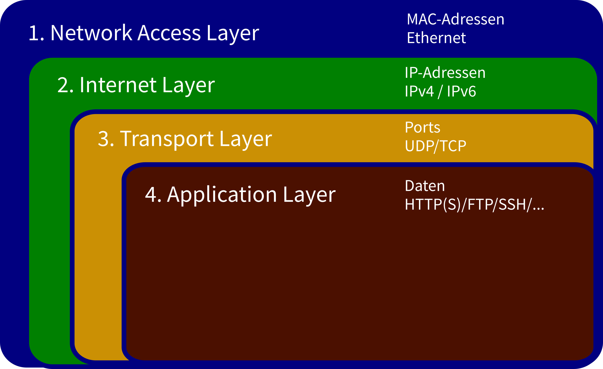
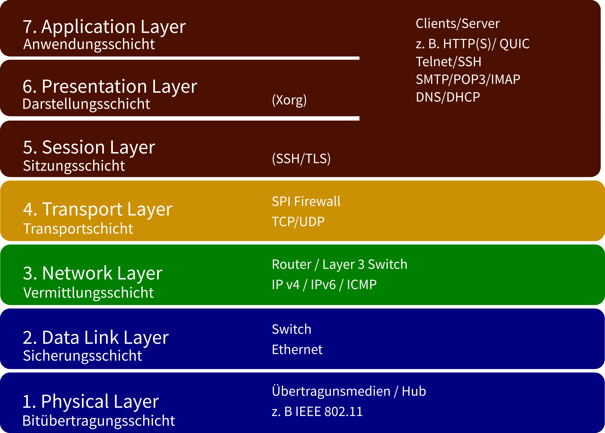

ITT-Netzwerke

Abbildung 1: TCP-Referenzmodell
Das TCP-Refenzmodell betrachtet die Übertragung von Datenpaketen vor allem unter dem Gesichtspunkt, der Header, die den übertragenen Daten weitere Schichten hinzufügen:
Umgekehrt werden beim Transport des Datenpaketes die Schichten von außen nach innen verarbeitet:

Abbildung 2: OSI-Referenzmodell
Das OSI-Modell baut zwar auf dem TCP-Referenzmodell auf, hat aber einen abstrakteren Ansatz. Es ist besser geeignet, um:
Die wichtigste Erweiterung ist das hinzufügen des Physical Layers Die Aufspaltung des Application Layers in Session-, Presentation- und Application Layer hat sich hingegen nicht bewährt.